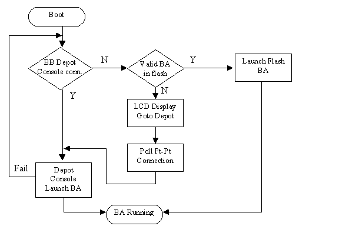
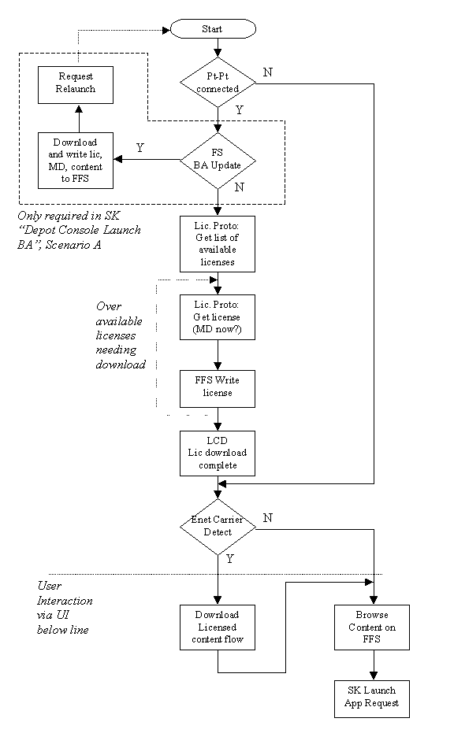

Browser Application and Relation to Secure Kernel
The goal herein is to define and partition the responsibilities of the browser
application (BA) relative to the secure kernel (SK). Especially important is
the time directly following system boot, when activation (as defined in
[1]) would take place. Because of the relatively small
amount of memory available to store the SK code, the BA is designed to
bootstrap the activation (and general license purchase) process. As a result
the BA will incorporate as much "startup" code as reasonable. This implies
that the BA must be the first "free" application supplied during activation,
and the SK must be capable of at least securely downloading and launching the
BA.
Following this model of partitioning, the BA will implement much of the secure
protocols defined. Since the BA executes in application (non-secure) mode, the
secure kernel must supply entry points that allow the browser to implement
these protocols (for obtaining licenses, etc.). Therefore, this partioning
should help us to:
- define the SK entrypoints required by the BA (for implementing
secure protocols, launching applications, ...)
- define and scope the modules to be implemented by SK and BA
- logically partition secure protocol functionality (since some
portion will need to be fully implemented within the SK).
There are some aspects of the partitioning that present design tradeoffs
such as flexibility vs. secure flash code-size vs. hardware impact. For
example, it would be beneficial to not require nand flash write drivers
and a FFS writing layer in the secure flash. However, allowing for this
would require hardware changes. An effort will be made to identify tradeoffs
such as these so we can make appropriate desicions.
Secure Kernel Startup
The SK startup flow is depicted in Figure 1. This starts from the point where
the boot process has completed and all hardware is initialized. It is assumed
we are running in secure mode during the flow covered in the Figure.
The SK is basically performing activation. This is the process whereby a
working BA is initially loaded to the BB.

Figure 1. Secure Kernel Startup Flow
Some notes on Figure 1 follow.
BB depot console conn.-
- this is spelled out as a special (possibly direct) connection
to the BB Depot in [1]. The SK must contain
the code to detect this connection. How this should happen is TBD.
- if the physical connection is truly point-to-point, then the
networking support in the SK can be pared down to only support this
type of connection (no ARP or equivalent, if IP then only single
hop, ...). This is done by insuring the BA takes over control
before any more general networking connectivity must be
supported.
- if this is not pt-to-pt, the depot could be on the same
physical network so a minimal network solution could consist of
a stripped down IP with no multi-hop or fragmentation support, ARP and
UDP.
Depot Console Launch BA-
The goal is to launch the most recent BA which may be obtained using
the BB to Depot Console connection. To accomplish this
there are two scenarios worth considering. In scenario A, the BB is capable
of launching an encrypted application over the net, bypasssing nandFlash. This
is attractive because if this can be done, no nandFlash writing drivers, or FFS
writing code needs to be included in the SK. It is costly though, because it
requires a HW path from SRAM-CE-DRAM which is not currently considered in the
HW design. It also implies that the BA loaded is self contained and will
not require any further data (such as it could normally obtain from FFS).
This problem can be mitigated by dividing the BA into more of a bootsrap
app, and a true browser which the bootstrap app will have the responsibility
of downloading.
In scenario B, the SK must download and write the BA (license, MD and app)
to FFS, then launch the BA from flash. There is no cost in launching the
app from flash since the SK must be capable of this anyhow. But again, the
SK needs to contain the FFS writing code, which is one more piece to fit
into the small codespace available to the SK. Since the SK cannot be updated
but the BA can, fixing minor problems that arise with the FFS would be
simpler if all the writing code is maintained in the BA.
Scenario A will involve the following steps:
- use a secure protocol to obtain BA license from depot over special
BB to Depot Console connection. Note that the license is NOT written to
flash at this stage. This is to avoid having flash writing code
included in the SK.
- verify the BA license in memory.
- use a protocol to obtain the BA from depot (also the content
MetaData (MD), since some info required for launch, such as the main
entry point, may be stored in the MD).
- load BA directly into memory (while using above protocol to
obtain bits). This would require reading a "chunk" of encrypted
data into DRAM (DMA from enet driver), copying to SRAM, then
copying back to it's target position in DRAM through the CE.
- begin execution of browser code (leave secure mode, set PC
to browser entry point, ...).
Scenario B will involve the following steps:
- use a secure protocol to obtain BA license from depot over special
BB to Depot Console connection.
- verify the BA license in memory.
- write the BA license to FFS. Strong assumptions should be made
regarding the placement of this license (and following MD/content as
well) to mitigate the code complexity within the SK.
- use a protocol to obtain the BA from depot (also the content
MetaData (MD), since some info required for launch, such as the main
entry point, may be stored in the MD).
- write the BA/MD to FFS.
- initiate BA application launch from FFS.
Launch Flash BA-
This is a normal launch from the BA image on Flash. Any launch from Flash
will require enough Flash File System (FFS) reading code to perform the
steps outlined below. We are assuming the browswer will always be stored
in an easily locatable postition on the on-board flash storage (and not
some pluggable media that may or may not be present).
- find the license (possibly with some assumptions on location
and help from the browser app).
- find the start of application code and MD associated with the
license.
- determine enough about the block layout of application code
to program memory mapping registers which will make the
application code appear contiguous in flash (this is to account
for bad blocks and having app code span physical flash boundaries.
It will probably be explicity encoded during the content
writing).
Overall, the flow chart could begin by checking for a valid BA in Flash.
The drawback of this approach is that if a "bad" browser (that does pass
the launch criteria) is ever contained in Flash (due to a nandFlash block
going bad and still passing the hash, or distribution mistake), simply
being connected to a capable depot/server and reloading an updated BA will not
be able to remedy the problem. It is assumed the BA will begin by first
checking to see if it's flash image requires updating, as will be made clear in
the next section.
Browser Application Startup
The BA startup flow is depicted in Figure 2. This starts from the point where
the SK has left secure mode and transferred execution to the BA. The BA will run
in application mode, but encoded in the BA license must be enough priveledges
to carry out the tasks in the Figure.
Part of the organization of the flow chart is intended to cover the case where
a user orders new content utilizing a special connection (possibly pt-pt)
controlled by a cashier/vendor. In this case the license purchase will proceed
as soon as the BA begins execution. Based on Figures 1 and 2, this would occur
if the BB was connected to the special port just before being powered up. It is
also possible to allow detection of the connection through some sort of polling
mechanism in the BA, but explicity calling this out is not crucial to the task
of separating functionality between the BA and SK, so it is not considered
here.

Figure 2. Browser Application Startup Flow
Some notes on Figure 2 follow.
FS BA Update-
Will use the same protocol to request a license as the SK block "Pt-Pt launch
BA" did. In this case, however, it is important for the protocol to allow a
request for a particular application and then receive version information as
well. This allows the BA to compare the version available to the version stored
in Flash, and determine if the version in Flash needs to be updated. Since the
browser will be rewriting itself, it may be necessary (depending on the details
of the FFS implemented) to insure the BA has loaded all required code to
perform this step before overwriting itself.
Lic. Proto: Get list of available licenses-
Use a secure protocol to obtain a list of available licenses. Since the
protocol is implemented in the application mode BA, the SK must provide any
entry points required to satisfy secure aspects of the protocol (signing for
authentication, ...).
Lic Proto: Get license (MD now?)-
Use a secure protocol to obtain a requested license (one from the list
previously retrieved). Since this same protocol was used by the SK, and
therefore must be implemented there, this step may be implemented using
a SK kernel call which takes a memory pointer for license storage as
input. There is a question of whether the MD should be downloaded at
this point as well. Downloading the MD would allow the BA to later
browse content without having the actual content downloaded. This could
easily be a step that occurs later as well.
FFS Write license-
The license data must be written to flash. The exact form of the FS is still in
flux. Management of writing is carried out by the BA (it's license provides the
capability to perform this task). The writing and FFS implementation will
require low-level Flash programming control via a set of registers exposed
through the PI (i.e., the nandFlash driver). The SK should setup the memory
map to allow use of these registers when it launches the BA.
Over available licenses needing download-
two models could be used to determine which licenses should be downloaded.
First, the protocol could be such that only those just keyed in by the cashier
are downloaded at this stage. Second, all available licenses could be listed
and the BA can determine from FFS which licenses actually need to be
downloaded. The first method is probably the most straitforward, but then we
would still require a separate protocol exchange to find all available
licenses.
LCD Lic download complete- simple message on the LCD to inform a
cashier/user that the newly purchased licenses have successfully been
transferred to the BB and stored.
Enet Carrier Detect- detect if an ethernet connection is present.
If so attempt to download content can proceed. Otherwise, browse content
on FFS that may be launched and allow launch.
Download Licensed content flow-
This step in itself requires a flowchart to describe. The user should be
presented with the opportunity to download content for which they have
a valid license (i.e., while connected to a depot, or other networked
means we decide to provide). This may include content updates to newer
versions, or content that isn't currently present on FFS in any form.
A reasonable UI will need to enable the user to manage flash storage
by removing content to make room for more (i.e., licenses stay, MD stays,
but the content goes). It may make sense for the browser to automatically
check for a self-update within this block.
Only Required in SK "Depot COonsole Launch BA", Scenario A"-
If the SK flow from Figure 1 uses Scenario A, the browser app will already
be written to flash so this step isn't needed at this time.
At this point we could also download any needed MD if it is not downloaded
along with the licenses earlier in the flowchart.
Required Software Modules
There are some dependencies on exact protocol definitions, so more modules
may be added once these are defined.
Secure Kernel (very rough size estimates)
- ethernet driver (1K)
- modified "IP" layer (4-8K) - depends on how tightly we can
constrain what this layer needs to do. At 4K it may only support
simple pt-pt communication. At 8K it may be IP for local network
only (no fragmentation, no multiple hops), ARP, UDP, and simple
protocols over UDP for "reliable" communiction (not as complicated
as TCP with backoffs, ...).
Hopefully we do not require SSL here, since that may imply
TCP and a software CE.
- protocol XXX (???) - from secure protocols defined
- license verification (???)
- MD parsing (small)- the n64 entrypoint may be encoded in the MD.
This is currenlty stored within the first 4K of an n64 game, but our
launching process will not need this 4k (the hash it stored is in our
license. Otherwise, the initial 4K contained metadata information and
game loading code. Our launch mechanism will not use the 4k n64 launch
code, so this should be eliminated - not just to save space; it would
complicate matters).
- LCD drivers (???)
- LCD bitmaps and display management for simple messages (???)
- nandFlash read drivers (1K)
- FFS reading code (2-4K)- enough to be able to find the license, MD
and content/application given a pointer from the BA, or an assumption
that the logically first application (BA) will be launched.
- flash write drivers (2K) - only if we do not provide HW support
for the SK to launch an encrypted application from the network.
- FFS writing code (3-8K) - only needed if we do not provide HW
support for the SK to launch an encrypted application from the network.
We could consider some restrictions on the FFS that allow the SK
writing to be as simple as possible, and leave the overall management
of the FS to the BA. This depends on the yet-to-be designed FFS though.
Decisions such as to how we manage placement and linkages of license,
MD, content, and writeable content state area (emulation of
controllerPak, cartidge EEPROM, cartridge SRAM), how we manage bad
blocks, whether we choose to utilize ECC for critical data such as
licenses, or more often written areas (game state) will be important.
Browser (bootstrap) Application
- ethernet driver
- IP layer, ARP, udp, tcp, SSL???
- protocol YYY - from secure protocols defined
- LCD drivers
- LCD bitmaps and display management for simple messages
- nandFlash read/write drivers
- FFS r/w and maintanence (bad blocks, ECC, ...)
- application writing API - still to be defined.
- other higher-level UI elements TBD.
Issues and Dependencies List
This is a summary of some design issues and dependencies, most of which have
been previously raised in this document. These need to be resolved to
make final decisions on partitioning and software design.
- what is the connection from BB to BB Depot Console? (pt-pt,
local ethernet with other BB's present, ...).
- do we modify current HW spec to allow for an SRAM-CE-DRAM
path? This would allow us to remove the nandFlash write drivers,
and FFS writing module from the SK implementation. It could also
aid in testing (possibly in providing a DevKit mode of running
encrypted content without requiring a flash burn, but the necessity
of this requires more thought).
- assumptions regarding flash page/block failure modes.
We need to know things such as how many, when they are expected
to occur (before shipping, after initial burnin, how many program/
erase cycles), what we can do during a factory burnin, and what the
expected failure modes are (single bit on read not considered failure
due to ECC assumption, when will this occur, ...).
A few of the issues to follow depend on these assumptions.
- HW PI registers for controlling flash i/o need to be defined.
The nandFlash drivers in the SK depend on this definition. The driver
sizes aren't expected to be too large (1-2K), but this would still
be good to nail down.
- final architecture decision that flash segmentation registers
will be the mechanism to present segmented flash addresses as a
contiguous range to the host CPU.
- HW address segmentation register use model, and number, need
to be defined (or equivalent). The number will depend on our
assumptions regarding nandFlash block failure modes.
- Number of HW address segmentation registers must be decided
- FFS needs to be defined. This will allow us to more precisely
determine the cost (due to code size) of having FFS writing code in SK.
This depends strongly on our nandflash assumptions regarding bad
blocks, etc.
- use model for expansion memory. This will define some FFS
characteristics since it will need to adapt to the possible
insertion of new memory.
SK Entrypoints required by BA
Put this off until protocols become more defined.
Protocol Notes
Will contain a decription of how the partitioning impacts protocol
granularity with respect to request/response. Wait to see first
round of protocol definitions.
References
[1]
BB Depot
Overview